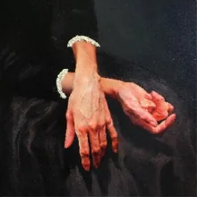

Le site
Tous mes liens
Pro
Perso
Philosophal
Chercher. Discerner. Transmettre.
Le site
Philosophal.fr
Cours de philosophie & méthodologie
Me suivre
TikTok
@lephilosophal
Instagram
@lephilosophal
YouTube
Philosophal · @lephilosophal
Facebook
Page Philosophal
Cours particuliers
Cours de philosophie
Mon annonce sur Leboncoin
Méthodologie universitaire
Mon annonce sur Leboncoin

Apocalupso
Me suivre
TikTok
@apocalupso · Musique & découvertes
Instagram
@floriansophal
Pinterest
Images & inspirations
Ma création
Apocalypnose
hypnose courte, induction
Musique
Spotify
Mon profil & mes playlists
Rate Your Music
Notes, listes & explorations musicales
Last.fm
Mes écoutes · AngelAdfectus
SoundCloud
Angel Adfectus
MuseScore
Mon profil & mes partitions
Culture & découvertes
SensCritique
Films, livres, musique & autres découvertes